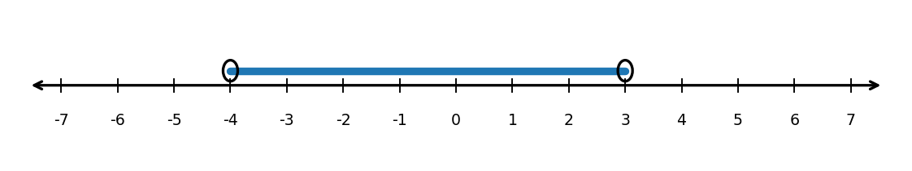
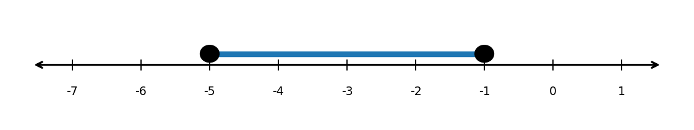

Write the inequality $x \ge -4$ in interval notation.
The values include $-4$ and continue to the right forever.
Answer: $[-4,\infty)$
Write the interval $( -\infty, 7 )$ as an inequality.
The interval includes all values less than $7$, but does not include $7$.
Answer: $x<7$
The number line shows a solution set.

A student drew the number line shown for the inequality $-5<x<-1$.

Factor each expression completely.
Match each equation to its solutions.
Solutions:
Fill in the blanks.
If $f(x)=2(x-5)(x+3)$, then the zeros are ______ and ______, and the $x$-intercepts are ______ and ______.
The zeros are $5$ and $-3$.
The $x$-intercepts are $(5,0)$ and $(-3,0)$.
Which expression is equivalent to $x^2-5x-24$?
The correct choice is a.
$(x-8)(x+3)=x^2-5x-24$
Solve by factoring.
For the function:
$g(x)=3(x+1)(x-5)$
A student says:
“The graph of $y=(x-2)(x+6)$ has $x$-intercepts at $2$ and $6$.”
Explain the mistake. Then state the correct $x$-intercepts.
The student forgot that $x+6=0$ gives $x=-6$, not $x=6$.
The correct $x$-intercepts are $(2,0)$ and $(-6,0)$.
A company models profit with $P(x)=-(x-4)(x-12)$, where $x$ is the number of items sold in hundreds and $P(x)$ is profit in thousands of dollars.

Rewrite each radical using rational exponent notation.
Fill in the blanks.
For $x^{m/n}$, the denominator $n$ tells the ______, and the numerator $m$ tells the ______.
For $x^{m/n}$, the denominator $n$ tells the root, and the numerator $m$ tells the power.
Evaluate each expression without a calculator.
A student says:
“The numerator in $x^{m/n}$ is always the root.”
Explain the mistake using the expression $x^{3/5}$.
The denominator tells the root, and the numerator tells the power.
$x^{3/5}=\sqrt[5]{x^3}$, so the root is the fifth root and the power is $3$.